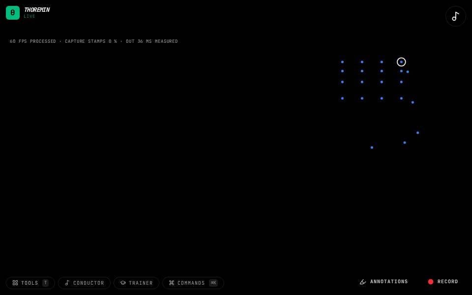

Air instruments
Mime an instrument and it plays: strike a drum, pluck a bass, strum a guitar or blow a flute at nothing.

Air Bass
Hold both hands up in front of you.

Air Drum
Hold a hand like you hold a drumstick and strike downward.

Air Flute
First teach it your fingerings (the editor's Air flute section).

Air Guitar
First teach it your chord shapes (the editor's Air guitar section).